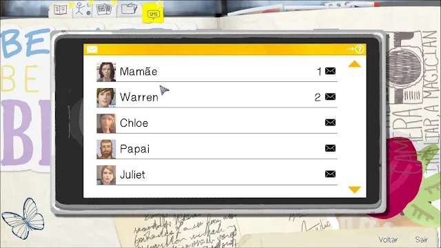

Em Life Is Strange você controla a reservada e tímida Max, uma garota que acabou de completar 18 anos e está estudando para ser fotógrafa profissional, profissão essa que ela sonha exercer desde criança.

Max retornou a sua cidade natal para ser estudante de um famoso fotógrafo que lesiona por lá. Foi a cinco anos atrás que Max deixou sua cidade e também sua melhor amiga Chloe ao qual ficou todo esse tempo sem entrar em contato.
Seu retorno à cidade parece normal, em sua classe há uma estudante metida que se acha melhor do que todos e sempre tem ao seu redor seguidoras, o seu professor é realmente um gênio e se preocupa com o futuro de seus alunos, como qualquer escola há os valentões, os nerds e aqueles que são alvos das brincadeiras da turma, Max até mesmo tem um amigo que claramente gosta dela se importa muito com ela. Mas esse jogo não se trata somente de uma história tipo Malhação, tudo começa com um estranho pesadelo. Max está à mercê de uma tempestade perto de um Farol e testemunha um tornado gigante engolindo a cidade. Ao acordar, Max se encontra na sala de aula, mas com um sentimento estranho, como se o que ela havia sonhado realmente tivesse acontecido.
Seu retorno à cidade parece normal, em sua classe há uma estudante metida que se acha melhor do que todos e sempre tem ao seu redor seguidoras, o seu professor é realmente um gênio e se preocupa com o futuro de seus alunos, como qualquer escola há os valentões, os nerds e aqueles que são alvos das brincadeiras da turma, Max até mesmo tem um amigo que claramente gosta dela se importa muito com ela.
Para clarear a mente, Max vai ao banheiro lavar o rosto e acaba testemunhando o assassinato de uma garota pelo aluno mais rico do colégio, no momento em que isso acontece ela acorda de novo na mesma aula que havia acabado de assistir, foi aí que Max percebeu que voltou no tempo e que pode tentar salvar a garota.
Life Is Strange trata-se de um jogo de escolhas, se você se arrependeu de algo, tem a chance de voltar no tempo e mudar o destino.
No jogo você poderá controlar o personagem em uma visão em terceira pessoa, seus movimentos podem ser controlados pelos botões ou teclas mais comuns em jogos e a interação com objetos é através de cliques. Em Life Is Strange há também diálogos entre as cenas cinematográficas e os diálogos de escolha durante o gameplay. Você pode escolher o que fazer ou o que dizer.
Interagir com as pessoas(pode regressar/voltar para o tempo para ver as inumeras deciçoes)
Interagir com os objetos
Uma coisa muito interesante e que e possivel da para ler no diario da max ela coloca suas fotos etc...

E possivel tambem ver as mensagens,(obs:o jogador não escreve,mas da pra ver em tempo real.
Em 7 de outubro, Max descobre que pode voltar no tempo quando usa esta habilidade para salvar sua velha amiga Chloe de ser baleada por Nathan Prescott. Mais tarde, elas se reencontram e Max sente que uma tempestade está à caminho após ter uma premonição.
Em 8 de outubro, Max tenta descobrir mais sobre sua capacidade de voltar no tempo, e descobre o motivo pela mudança repentina no humor e comportamento de sua amiga Kate Marsh. Chloe testa o poder de voltar no tempo de Max intensivamente, levando a ela a descobrir o limite da sua habilidade. Max acaba eventualmente descobrindo a capacidade de parar o próprio tempo para salvar sua amiga Kate de uma tentativa de suicídio.
Em 8 de outubro, a investigação de Max e Chloe sobre o desaparecimento de Rachel Amber as leva a invadir a Academia Blackwell de noite, procurando por respostas. É aqui e em outros locais no dia seguinte, que elas descobrem que Rachel guardava muitos segredos e não era a pessoa que Chloe pensava ser. Enquanto isso, Max descobre possuir outro poder que traz consigo consequências devastadoras.
Na realidade alternativa criada pelas ações da Max com o intuito de salvar o pai de Chloe, William, Max aprende as consequências de sua habilidade e muda as coisas de volta ao modo como eram. Na linha do tempo original, Max e Chloe trabalham juntas para provar que Nathan Prescott drogou Kate e irá atacar novamente na Festa do fim do Mundo. Elas enfim descobrem a Sala Escura e o paradeiro de Rachel Amber, e caem na armadilha do verdadeiro culpado.
Presa na sala escura, Max precisa escapar e voltar no tempo para salvar Chloe de ser morta com um tiro pelo Jefferson. Ela descobre que Nathan foi morto e finalmente descobre uma maneira de voltar e se reunir com Chloe. Max encara as consequências devastadoras de suas ações ao longo da semana e seus maiores medos. No final, terá que optar entre duas escolhas: sacrificar a Chloe, salvando a cidade e seus amigos, mas Chloe acaba morrendo; ou sacrificar Arcadia Bay, provavelmente matando todos os seus amigos e deixando a Chloe viva. Em um dos finais, as duas deixam as ruínas de Arcadia Bay na caminhonete da Chloe logo após a destruição da cidade.